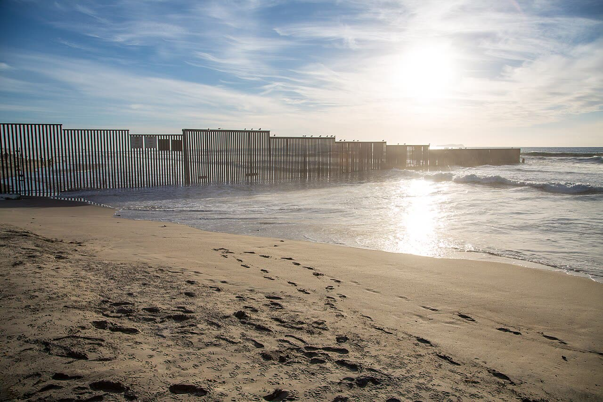

Trump minaccia di raddoppiare i dazi al Messico se non ferma le carovane
Nessun decreto né scadenza, e dopo la sentenza sull'Ieepa la base legale è dubbia. Sheinbaum: nessuna carovana è arrivata al confine. I dazi usati come arma li pagano i consumatori.
Redazione Contrappunto · aggiornato il 13.11.2026


Giovedì 12 novembre 2026 il presidente degli Stati Uniti Donald Trump ha scritto su Truth Social, il suo social network, che il Messico deve fermare subito le carovane di migranti dirette al confine americano, altrimenti i dazi sul Messico saranno raddoppiati «immediatamente». I dazi sono tasse sulle merci che entrano in un paese, pagate da chi le importa e di solito scaricate sui prezzi. È una minaccia, non un atto: non c'è un decreto né una scadenza, e Trump non ha detto quali dazi raddoppierebbe. La presidente messicana Claudia Sheinbaum ha risposto lo stesso giorno.
Vedi di più: 4 parole spiegate, cosa si racconta
Cosa si raccontaIl racconto di Trump è che con la sconfitta dei repubblicani alle elezioni di metà mandato è ricominciata una «invasione», con carovane formate anche da persone che «altri paesi non vogliono» (Fox). Il Messico risponde che da quando Trump è tornato alla Casa Bianca nessuna carovana è arrivata alla frontiera nord, che quelle in cammino si sono ridotte (da 500-600 persone a meno di 100, per quella di Arriaga) e che la maggior parte dei migranti, informata che non potrà passare, torna a casa (CNN, Infobae). Le cifre sulla carovana partita da Tapachula divergono: circa 1.500 persone per Fox e Infobae, circa 2.000 per CNN. Non abbiamo letto nessuna testata messicana. [Fox News] [Infobae] [CNN Español]
- Carovana
- Gruppo di centinaia o migliaia di migranti che viaggia unito, in gran parte a piedi, per proteggersi dalla criminalità e risparmiare sui trasporti (CNN). Quella di cui si parla è partita il 10 novembre da Tapachula, nel sud del Messico, vicino al confine con il Guatemala.
- Ieepa
- Legge americana sui poteri economici d'emergenza del presidente, usata da Trump per imporre dazi a quasi tutto il mondo. Il 20 febbraio 2026 la Corte suprema ha stabilito, per 6 voti a 3, che non autorizza dazi (CBS).
- USMCA (T-MEC in Messico)
- L'accordo di libero scambio tra Stati Uniti, Messico e Canada, in vigore dal primo mandato di Trump. Nel riesame congiunto di luglio gli Stati Uniti non hanno accettato di rinnovarlo nella forma attuale; resta in vigore mentre si tratta (USTR).
- Truth Social
- La piattaforma social su cui Trump pubblica i suoi messaggi; il post sulle carovane è di giovedì mattina (Fox).
- Il 12 novembre Trump ha scritto su Truth Social che i dazi sul Messico saranno raddoppiati subito se non ferma le carovane di migranti: è una minaccia, senza decreto né scadenza né dazi indicati (Fox, Infobae).
- Sheinbaum risponde che da quando Trump è tornato nessuna carovana è arrivata al confine nord; i media stimano 1.500-2.000 migranti partiti da Tapachula, lei parla di meno di 100 nella carovana di Arriaga (Fox, CNN, Infobae).
- Dopo la sentenza della Corte suprema del 20 febbraio i dazi basati sull'Ieepa sono caduti; restano quelli su acciaio, alluminio e auto e, dal 24 luglio, i dazi «Section 301» su 60 economie, Messico compreso (CBS, USTR).
Fox riporta la minaccia con le parole di Trump; CNN e Infobae aggiungono la replica di Sheinbaum e un dubbio che Fox non pone: dopo la sentenza di febbraio sull'Ieepa non è chiaro con quale potere Trump raddoppierebbe quali dazi. È una minaccia, non un atto, e nessun giornale messicano è nel nostro registro. Il nostro punto: i dazi usati come arma su un altro tema, contro un alleato, sono una tassa che pagano i consumatori, come ricordano gli economisti citati dalla CBS, e nel 2019 la minaccia finì con un accordo, non con i dazi. Sulle carovane la strada è un'altra: flussi legali per lavorare e rimpatri rapidi. [1] [3] [2] [4] [9]
La verifica punto per punto6 passaggi, 10 fonti
Qui sotto ogni cosa scritta sopra, una per una, con le fonti. Confermato: lo dice un documento originale o più fonti lette. Plausibile: lo riportano fonti serie, ma non abbiamo letto l'originale. Discordante: le fonti danno numeri diversi, e diciamo quali. Ipotesi e Opinione sono il nostro ragionamento, separato dai fatti.
La minaccia e la risposta
Il 12 novembre 2026 Trump ha scritto su Truth Social che «MEXICO MUST STOP THEM, NOW, and if they do not do so, the Tariffs on Mexico will be IMMEDIATELY DOUBLED», collegando le carovane alla «perceived loss» dei repubblicani alle elezioni di metà mandato (Fox). Non ha fissato un termine, non ha detto quali dazi raddoppierebbe e non c'è un decreto: «hasta ahora se trata de una amenaza» (Infobae). Sheinbaum ha risposto alla conferenza mattutina che dal ritorno di Trump non è arrivata nessuna carovana al confine nord; ha detto che i migranti vengono informati uno per uno che non passeranno, che la maggioranza sceglie di tornare e che chi vuole restare in Messico può farlo a certe condizioni, e che l'Istituto nazionale di migrazione e la Guardia nazionale accompagnano le carovane senza repressione (CNN, Infobae).
Quanti migranti sono davvero
Le stime sulla carovana non coincidono: circa 1.500 persone partite da Tapachula il 10 novembre secondo una fonte del governo statale, riportata da Reuters (Fox, Infobae); circa 2.000 secondo CNN Español, che parla di una carovana partita dall'Honduras il 3 novembre; meno di 100 secondo Sheinbaum, ma riferita alla carovana di Arriaga, nata con 500-600 persone. Infobae segnala che non c'è una cifra ufficiale unica e che i dati possono riguardare gruppi o momenti diversi.
Quali dazi ci sono già
Il 20 febbraio 2026 la Corte suprema ha stabilito, per 6 voti a 3, che l'Ieepa non autorizza il presidente a imporre dazi: sono caduti quelli «linked to drug trafficking» su Cina, Canada e Messico, che si basavano su quella legge (CBS). Restano i dazi su acciaio, alluminio e auto (CBS), che per l'USTR vanno dal 10% al 50% a seconda del prodotto. Il dazio globale del 10% del 20 febbraio non si applicava alle merci di Canada e Messico coperte dall'accordo USMCA (CBS). Il 23 luglio l'USTR ha deciso dazi del 10% o del 12,5% su 60 economie, in vigore dal 24 luglio, tra cui il Messico, indicato fra i sei che non fanno rispettare il divieto di importare merci prodotte con lavoro forzato. Per il Messico la decisione impone «10 percent tariffs on products of Mexico, except as provided in Annex I and Annex II, Part A»: 10% sui prodotti messicani, salvo le esenzioni degli allegati, che non abbiamo letto. Infobae riporta, da «un medio» non nominato e dalle parole di Sheinbaum di luglio, dazio zero per le merci conformi all'accordo (con eccezioni per veicoli e acciaio) e 10% per le altre: il 10% coincide con la decisione USTR, l'esenzione per le merci conformi all'USMCA resta da verificare negli allegati. Nel riesame di luglio gli USA non hanno rinnovato l'USMCA nella forma attuale; resta in vigore (USTR).
Il precedente del 2019
Il 30 maggio 2019 Trump annunciò un dazio del 5% su tutte le merci messicane dal 10 giugno, in aumento fino al 25% il 1° ottobre se il Messico non avesse fermato i migranti centroamericani (PBS/AP). Il 7 giugno annunciò un accordo firmato e i dazi «indefinitely suspended»: il Messico si impegnò a schierare la Guardia nazionale, con priorità al confine sud, e gli USA ad ampliare il programma «Remain-in-Mexico» (PBS/AP, CBS). Prima dell'accordo senatori repubblicani e imprese avevano chiesto di ripensarci, per il danno ai consumatori americani (PBS/AP, CBS).
Cosa può voler dire
La minaccia sembra servire più come leva nella trattativa con il Messico e come risposta politica interna alla sconfitta elettorale che come un dazio in arrivo.
Ragionamento: Nessun decreto, scadenza o dazio indicato (Infobae); base legale incerta dopo la sentenza (Infobae, CBS); Trump lega le carovane al voto di metà mandato (Fox); la minaccia arriva mentre USA e Messico trattano sull'accordo commerciale (Infobae); nel 2019 una minaccia simile si chiuse con un accordo prima dell'entrata in vigore (PBS/AP, CBS). Non è una previsione: i dazi su acciaio e auto restano uno strumento che non ha bisogno dell'Ieepa.
Il nostro punto
I dazi usati come arma su un altro tema, qui l'immigrazione, sono una tassa pagata dai consumatori americani e un danno a un alleato con cui c'è un accordo di libero scambio. Sulle carovane la strada giusta è fatta di flussi legali per il lavoro e rimpatri rapidi di chi non ha titolo per restare, non di una guerra commerciale. Se la minaccia diventa un atto, sbaglia.
Fonti10, tutte con il link
- Trump threatens to double tariffs on Mexico if migrant caravans not stopped (12 novembre 2026) (Fox News) · consultata il 13.11.2026
- Sheinbaum responde a Trump tras advertencia de duplicar aranceles: asegura que ninguna caravana ha llegado a la frontera norte (12 novembre 2026) (Infobae) · consultata il 13.11.2026
- Trump amenaza con duplicar aranceles a importaciones de México si no frena la migración: claves de la caravana rumbo a EE.UU. (12 novembre 2026, pagina dietro abbonamento: letto il testo visibile) (CNN Español) · consultata il 13.11.2026
- Trump imposes 10% tariffs on all countries after Supreme Court struck down earlier tariffs (20 febbraio 2026) (CBS News) · consultata il 13.11.2026
- Ambassador Greer Issues Statement on Supreme Court IEEPA Decision (20 febbraio 2026) (Ufficio del rappresentante USA per il commercio (USTR)) · consultata il 13.11.2026
- Notice of Actions in Section 301 Investigations ... Failure ... to Impose and Effectively Enforce a Prohibition on the Importation of Goods Produced with Forced Labor (Federal Register, 23 luglio 2026) (Ufficio del rappresentante USA per il commercio (USTR)) · consultata il 13.11.2026
- Ambassador Greer Issues Statement on the USMCA Joint Review (luglio 2026) (Ufficio del rappresentante USA per il commercio (USTR)) · consultata il 13.11.2026
- Trump hits Mexico with 5 percent tariff in response to migrants (30 maggio 2019) (PBS NewsHour (Associated Press)) · consultata il 13.11.2026
- Trump suspends plan to place tariffs on Mexican goods (7 giugno 2019) (PBS NewsHour (Associated Press)) · consultata il 13.11.2026
- Trump says U.S. and Mexico reach last-minute deal to avoid tariffs (8 giugno 2019) (CBS News) · consultata il 13.11.2026
Testo preparato con strumenti di intelligenza artificiale e pubblicato senza revisione umana. Come lavoriamo